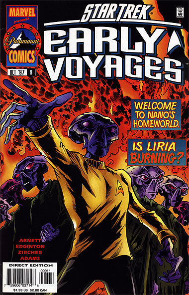
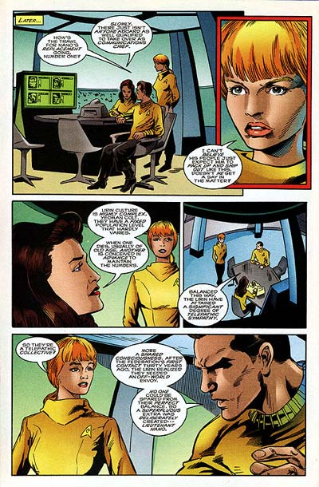

|


|

|
Gênese
| Episódios I Reflexões
| Palavras do autor | Palavras
do artista Star Trek
Early Voyages, nº 09 – outubro de 1997  História: Dan Abnett e Ian Edginton Material produzido por Salvador Nogueira para o Trek Brasilis
Data Estelar: 361.6 Sinopse: Estranhos episódios andam acontecendo em Liria, o planeta-natal de Nano, oficial de comunicações da Enterprise. Três mortes já foram causadas, mas todas foram classificadas pelas autoridades locais como acidentes. A socidade Lirina vive um equilíbrio extremamente delicado, como uma mente telepática coletiva. A perda de um membro da comunidade causa grande abalo na mente coletiva, exigindo alguém para substituir o faltante. Em razão dos acidentes, Nano é chamado de volta a seu mundo. Ele havia originalmente sido criado para servir de oficial de ligação entre Liria e a Federação, após o primeiro contato entre os dois povos, estabelecido há 30 anos. Mas, agora, com a crise em Liria, Nano deverá se juntar a seus iguais para restaurar o equilíbrio da Unidade Lirina. A Enterprise é enviada até Liria, onde um grupo de descida é recebido pelo adjunto Koda, porta-voz da Unidade Lirina. Ele recebe Nano e o leva até um local em que possa ser retreinado em suas habilidades mentais, a fim de poder restaurar o equilíbrio da Unidade. Enquanto isso, José Tyler e Sita Mohindas passeiam pelo lugar, aproveitando para conhecer aquela reclusa sociedade. Quando eles conversam com um jardineiro, os dois testemunham mais um "acidente" --o tal jardineiro é tomado por uma enorme labareda de fogo. A tenente Mohindas viu nessa labareda um rosto Lirino, o que despertou sua desconfiança. Tendo os Lirinos um forte poder psicopirotécnico, a oficial acredita que as mortes não são acidentes. Nano, durante esse tempo, estava treinando seus poderes, mas fracassando miseravelmente. Ele foi salvo pelo capitão Pike depois de perder o controle mental e interromper o processo de levitação de um enorme monolito. Se Pike não disparasse contra a rocha, Nano não estaria mais lá para contar a história. O Lirino está frustrado por ter de deixar a Enterprise. Por mais que fosse um sonho seu se reunir a seu povo, não parece a coisa certa a fazer. Ademais, seu treinamento está sendo desastroso. O pessoal da Enterprise, a fim de ajudar seu amigo, liga Nano a um Amplificador Psiônico trazido da nave. Com ele, o oficial de comunicações consegue penetrar até o mais profundo âmago da Unidade Lirina. Lá ele descobre que os acidentes estão sendo provocados por um medo inconsciente dos Lirinos do que é desconhecido e estranho. Koda irrompe pela sala ordenando que o procedimento seja interrompido, pois estaria blasfemando contra a Unidade. Mas Nano fala o que sabe e convence seu povo a pedir a ajuda da Federação. Koda decide que é o melhor a fazer e a Frota Estelar envia uma nave científica até Liria, para investigar os acidentes. Nano é mantido como oficial de comunicações da Enterprise, mas deve voltar de tempos em tempos a seu mundo para transmitir à Unidade sua experiência com o desconhecido, ajudando a combater o mal que se alastra pelo inconsciente Lirino.  Comentários "One of a Kind" é a primeira história a enfocar Nano, suas origens e seu planeta-natal. E tudo que se pode dizer é que ela o faz com brilhantismo. Todo o background da cultura Lirina é extremamente bem estabelecido, e a história desenvolve brilhantemente o personagem de Nano. Em vez de parecer apenas um "oficial de comunicações esquisito", Nano é apresentado aqui de forma incrivelmente realista, tocante e complexa. Seu dilema sobre voltar a seu planeta, permanecer na Enterprise e ajudar seu povo é executado brilhantemente. Ao que parece, Nano está executando o tradicional papel de "espelho da humanidade" que toda série de Jornada possui. E funciona. É interessante notar como a história flui bem, apesar das 32 páginas e de sua enorme densidade. Ao que parece, após duas edições frustradas, os roteiristas aprenderam a lidar com o espaço reduzido. Não só do ponto de vista de andamento e complexidade da história, mas também no tocante a sequências inspiradas e bom uso dos recursos de quadrinhos parece que esta edição apresenta grande evolução. A abertura, com um dos "acidentes", e a revelação a Pike de que Nano está deixando a Enterprise são dois exemplos de pontos do roteiro extremamente bem-executados. O mérito vai todo para o desenhista convidado, Mike Collins. Se Collins conseguiu capturar muito bem a linguagem dos quadrinhos adaptada à história escrita por Edginton e Abnett, o mesmo não se pode dizer da aparência dos personagens. Embora seus traços sejam muito bonitos e o estilo, bastante agradável, perdeu-se a qualidade quase fotográfica que Zircher tinha em suas apresentações de Pike e cia. Talvez esse seja o único ponto negativo da edição. A tenente Mohindas também faz seu debut aqui como personagem relevante da série. Embora seus sentimentos para com Nano pareçam um pouco exagerados e deslocados (pelo fato de seu pai ter sido o representante da Federação a contatar Liria pela primeira vez e, por consequência, fazer com que Nano fosse criado e designado para a Enterprise), seu desempenho geral na história não compromete. Muito ao contrário, sua determinação em desvendar o mistério por trás dos acidentes é notável. Para terminar, é notável também a forma com que Nano foi mantido na Enterprise para a edição seguinte. Esse tipo de história geralmente é previsível --o personagem que está para partir sempre acaba ficando. Isso acontece aqui também, mas a solução brota de maneira tão genuína na história que nem parece que a manutenção do status quo é uma exigência da série, mas sim uma consequência óbvia dos fatos. Grande mérito para a dupla de roteiristas aqui.
|